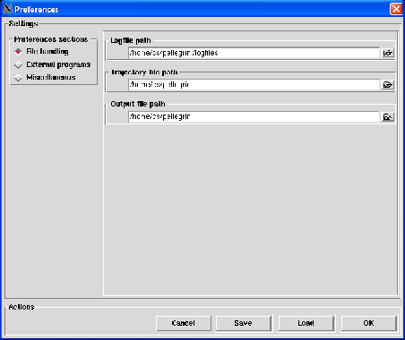
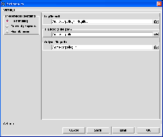
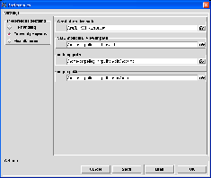
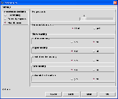
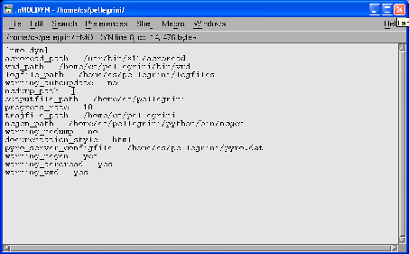

Next: Quit
Up: The File menu
Previous: Convert ASCII to NetCDF
Contents
Preferences
The Preferences option allows to set the nMOLDYN preferences using the ConfigParser Python-module mechanism
[46]. In nMOLDYN the preferences are classified in the three following sections:
- File handling: contains the preferences variables related to the file handled by nMOLDYN (log file, output file ...),
- External programs: contains the preferences variables related to the actions performed by nMOLDYN that require
an external program (e.g. displaying the documentation, animating a trajectory, converting NetCDF to ASCII or ASCII
to NetCDF ...),
- Miscellaneous: contains the other preferences variables that could not be classified elssewhere.
Pressing the Preferences menubutton will pop up the dialog shown in figure 4.16.
Figure 4.16:
The dialog used to set up nMOLDYN preferences.
|

|
By default, the dialog for File handling section is displayed. Clicking on the File handling,
External programs or Miscellaneous radiobutton will display the dialog corresponding to the selected
section (see Figure 4.17).
Figure 4.17:
The three preferences sections dialogs available in nMOLDYN. On the left,
the file handling section, on the middle the external programs section and on the right, the miscellaneous section.
|



|
Each preference section dialog contains an entry for each of its associated preferences variable initialized with a
default value. Here is the list of the nMOLDYN preferences variables:
- Logfile path
Section: File handling
Preferences variable name: logfile_path
Format: string
Default: The user $HOME directory
Description: The path for the directory where the nMOLDYN log files will be written.
- Trajectory file path
Section: File handling
Preferences variable name: trajfile_path
Format: string
Default: The user $HOME directory
Description: The path for the directory where the MMTK NetCDF trajectories will be loaded by default.
- Output file path
Section: File handling
Preferences variable name: outputfile_path
Format: string
Default: The user $HOME directory
Description: The path for the directory where the nMOLDYN output files will be written.
- Acrobat reader path
Section: External programs
Preferences variable name: acroread_path
Format: string
Default: None
Description: The path for the acrobat reader executable. If this path is not set, it will not be possible to display the
documentation in pdf format.
- VMD molecular viewer path
Section: External programs
Preferences variable name: vmd_path
Format: string
Default: None
Description: The path for the VMD molecular viewer executable [33]. If this path is not set, the
Animate and Effective mode options of the View menu will be disabled.
- ncdump path
Section: External programs
Preferences variable name: ncdump_path
Format: string
Default: None
Description: The path for the ncdump executable. If this path is not set, the
Convert NetCDF to ASCII option of the File menu will be disabled.
- ncgen path
Section: External programs
Preferences variable name: ncgen_path
Format: string
Default: None
Description: The path for the ncgen executable.
If this path is not set, the Convert ASCII to NetCDF option of the File menu will be disabled.
- Progress rate
Section: Miscellaneous
Preferences variable name: progress_rate
Format: not an editable entry
Default: 10
Description: The rate at which the progress of a nMOLDYN analysis will be displayed on the console and written
in the nMOLDYN log file.
- Documentation style
Section: Miscellaneous
Preferences variable name: documentation_style
Format: not an editable entry
Default: html
Description: The format for the nMOLDYN users guide when clicking on Help - Help item and for the
online help. HTML if html is selected, PDF if pdf is selected.
- ncdump missing
Section: Miscellaneous
Preferences variable name: warning_ncdump
Format: no an editable entry
Default: yes
Description: If set to yes, you will be informed if ncdump was not found at each nMOLDYN start
and each time the Preferences dialog is closed.
- ncgen missing
Section: Miscellaneous
Preferences variable name: warning_ncgen
Format: no an editable entry
Default: yes
Description: If set to yes, you will be informed if ncgen was not found at each nMOLDYN start
and each time the Preferences dialog is closed.
- VMD missing
Section: Miscellaneous
Preferences variable name: warning_vmd
Format: no an editable entry
Default: yes
Description: If set to yes, you will be informed if VMD was not found at each nMOLDYN start
and each time the Preferences dialog is closed.
- acrobat reader missing
Section: Miscellaneous
Preferences variable name: warning_acroread
Format: no an editable entry
Default: yes
Description: If set to yes, you will be informed if acrobat reader was not found at each nMOLDYN start
and each time the Preferences dialog is closed.
The Actions frame contains four buttons which are respectively:
Pressing the Cancel button will cancel the preferences settings and close the preferences dialog leaving the preferences in the state they
were when opening the Preferences dialog.
Pressing the Save button will pop up a file browser from which you will select a location to save the preferences.
By default, the preferences file name is:
$USERPROFILE\Application Data\nMOLDYN\nMOLDYN.ini on Windows,
$HOME/.nMOLDYN on Unix and,
$HOME/Library/Preferences/nMOLDYN.pref on MacOS
If those paths does not exist, they will be created. These default paths will be the ones that will be searched
when nMOLDYN is started. Pressing the Load button will load a preferences file through a dialog. OK will
use the settings for the running session of nMOLDYN but will not save them.
The figure 4.18 shows an example of a nMOLDYN preferences file built under a linux
workstation. Please note the format that must be strictly respected.
Figure 4.18:
Example of a nMOLDYN preferences file.
|

|
As can be seen from that figure, the file must start with the line '[nmoldyn]' followed by th declaration of each preferences
variables. For the vairables that may be missing in that file or with an empty value (e.g. ncdump_path in figure
4.18), the default value will be used.
Next: Quit
Up: The File menu
Previous: Convert ASCII to NetCDF
Contents
pellegrini eric
2009-10-06